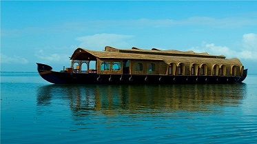

Kottayam
Kottayam is located in the basin of the Meenachil River at an average elevation of 3 metres (9.8 ft) above sea level, and has a moderate climate. It is located 150 kilometres north of state capital Thiruvananthapuram. The city is known for its trade in natural rubber, and the national Rubber Board is headquartered in the city, as is the Plantation Corporation of Kerala. Kottayam Port is India's first multi-modal inland container depot. The headquarters of the Malankara Orthodox Syrian Church, called the Catholicate Aramana (Catholicate palace), is situated at nearby Devalokam
- Kumarakom Bird Sanctaury
- Periyar Tiger reserve
- Illikal Kallu
- Vagamon


Kumarakom house boat
Vagamon hills